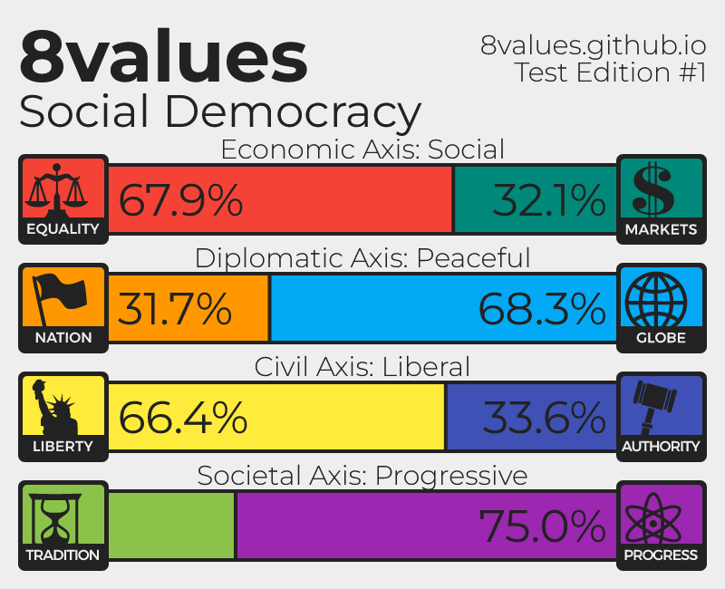

The 8 Values political ideology test is another, more different, political ideology test
The 8 Values test ranks the test taker onThe eight values are
Economic Equality, Market Freedom
Nationalism, Globalism
Libertarionism, Authoritarianism
Traditionalism, Progressivism
Those 8 Values are put onto 4 axes
Economics
Diplomacy
Civilities
Society
Results may look like:
